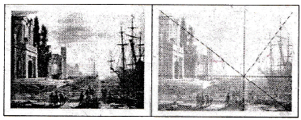
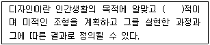
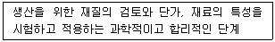
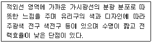
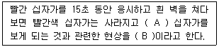
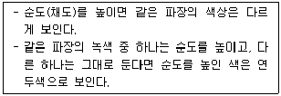
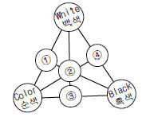
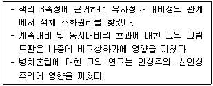

컬러리스트산업기사 (2019-04-27 기출문제)
1과목: 색채심리
1. 종교와 문화권의 상징색에 대한 설명이 틀린 것은?
- 색채는 모든 문화권에서 종교, 전통의식, 예술 등의 분야에 걸쳐 상징과 은유적 역할을 담당해 왔다.
- 힌두교와 불교에서는 노란색을 신성시 여겼다.
- 서양 문화권에서 하양은 죽음의 색으로서 장례식을 대표하는 색이다.
- 기독교와 천주교에서는 하느님과 성모 마리아를 고귀한 청색으로 연상해왔다.
(정답률: 73%)

2. 카스텔(Castel)은 색채/음악의 척도를 연구하고 각 음계와 색을 연결하였다. 다음 중 그 연결이 틀린 것은?
- A – 보라
- C - 파랑
- D – 초록
- E - 빨강
(정답률: 70%)
3. 안전표지에 관한 일반적 의미로 잘못 연결된 것은? (의미 - 안전색, 대비색, 그림 표지의 색)
- 금지 - 빨강, 하양, 검정
- 지시 - 파랑, 하양, 하양
- 경고 - 노랑, 하양, 검정
- 안전 - 초록, 하양, 하양
(정답률: 45%)
4. 착시에 대한 설명 중 틀린 것은?
- 망막에 미치는 빛자극에 대한 주관적 해석
- 기억의 무의식적 추론에 의해 나타나는 현상
- 대상을 물리적 실제와 다르게 지각하는 현상
- 색채잔상과 대비현상이 대표적인 예
(정답률: 52%)
5. 색채를 적용할 대상을 검토할 때 고려해야 할 조건이 아닌 것은?
- 면적효과 - 대상이 차지하는 면적
- 거리감 - 대상과 보는 사람과의 거리
- 공공성의 정도 - 개인용, 공동사용의 구분
- 안전규칙 - 색채선택의 안정성 검토
(정답률: 48%)
6. 색채의 연상과 상징에 대한 설명이 틀린 것은?
- 연상은 개인의 지식이나 경험 등 내면적인 요인에 기초한다.
- 연상조사 결과를 보면 조사 대상자의 소속집단 성향이 표현되거나 구체적인 연상이 시대의 추이를 반영한다.
- 상징은 추상적인 개념이나 사상을 형태나 색으로 쉽게 표현한 것이다.
- 고채도색보다 저채도색이 연상어의 의미가 크고, 이미지를 구체적으로 상징할 수 있다.
(정답률: 82%)
7. 지역색과 풍토색에 대한 설명 중 틀린 것은?
- 풍토색은 특정 지역의 기후와 토지의 색 및 바람과 태양의 색을 의미한다.
- 지리적으로 근접하거나 기후가 유사한 국가나 민족이라도 풍토색은 현저한 차이가 있다.
- 지역색은 각 지역을 대표하는 특정 지역에서 추출된 색채이다.
- 색채연구가인 장 필립 랑클로(Jean-Philippe Lenclos)는 땅의 색을 기반으로 건축물을 위한 색채팔레트를 연구하였다.
(정답률: 60%)
8. 제품 디자인을 위한 색채 기호 조사에 관한 설명이 틀린 것은?
- 문화적인 용인과 인성적인 용인이 혼합되어 나타난다.
- 기업이 시장의 요구에 응하기 위해서는 색채의 선택범위를 다양화하는 것이 좋다.
- 현대에 오면서 색채에 대한 요구나 만족도는 일정한 방향으로 흐른다.
- 자신의 감성을 억제하는 사람은 청색, 녹색을 좋아하고 적색을 싫어하는 경향이 있다.
(정답률: 72%)
9. 색채 마케팅 전략의 개발에 영향을 미치는 요인으로 가장 거리가 먼 것은?
- 라이프 스타일과 문화의 변화
- 환경문제와 환경운동의 영향
- 인구통계적 요인
- 정치와 법규의 규제 요인
(정답률: 75%)
10. 색채 마케팅과 내용으로 가장 거리가 먼 것은?
- 세분화된 시장의 소비자 그릅이 선호하는 색채를 파악하면 마케팅에 도움이 된다.
- 경기변동의 흐름을 읽고, 경기가 둔화되면 오래 지속될 수 있는 경제적이고 효과적인 색채마케팅을 강조한다.
- 21세기 디지털 사회는 디지털을 대표하는 청색을 중심으로 포스터모더니즘의 다양성과 복합성을 수용한다.
- 환경주의 및 자연을 중시하는 디자인에서는 많은 수의 색채를 사용한다.
(정답률: 84%)
11. 색채의 심리적 기능에 대한 설명 중 틀린 것은?
- 외관상의 판단에 미치는 심리적 기능은 색채의 영향과 색채의 미적 효과의 두 가지로 대별된다.
- 온도감, 크기, 거리 등의 판단에 영향을 미치는 것은 색채의 미적효과 때문이다.
- 색채는 인종과 언어, 시대를 초월하는 전달 수단이 된다.
- 색채의 기능은 문자나 픽토그램 같은 표기 이상으로 직접 감각에 호소하기 때문에 효과가 빠르다.
(정답률: 69%)
12. 높은 음을 색채로 표현할 때 어두운 색보다 밝고 강한 채도의 색을 사용하는 것이 효과적인 것과 관련한 현상은?
- 공감각
- 연상
- 경연감
- 무게감
(정답률: 48%)
13. 국제적으로 사용되는 안전을 위한 표준색 중 고급장비, 상비약, 의약품 등에 사용되는 안전색은?
- 빨강
- 노랑
- 초록
- 파랑
(정답률: 77%)
14. 패션 디자인 분야에 활용되는 유행 예측색은 실 시즌보다 어느 정도 앞서 제안되는가?
- 6개월
- 12개월
- 18개월
- 24개월
(정답률: 58%)
15. 제품의 색채계획이 필요한 이유와 가장 거리가 먼 것은?
- 제품 차별화를 위해
- 제품 정보 요소 제공을 위해
- 기능의 효과적인 구분을 위해
- 지역색의 적용을 위해
(정답률: 81%)
16. 색채선호와 상징에 대한 설명 중 틀린 것은?
- 연령별로 선호하는 색은 국가들마다 뚜렷한 차이를 보인다.
- 일조량이 많은 지역에서는 일반적으로 장파장의 색을 선호한다.
- 국가와 문화가 다르면 같은 색이라도 상징하는 내용이 다를 수 있다.
- 교육 정도가 높을수록 저채도를 좋아하는 경향이 있다.
(정답률: 53%)
17. 색채선호에 영향을 미치는 요인으로 가장 거리가 먼 것은?
- 지능
- 연령
- 기후
- 소득
(정답률: 55%)
18. 빨간색을 보았을 때 구체적으로 '붉은 장미'를 추상적으로 '사랑'을 떠올리는 것과 관련한 색채심리 용어는?
- 색채 환상
- 색채 기억
- 색채 연상
- 색채 복사
(정답률: 80%)
19. 일반적으로 국기에 사용되는 색과 상징하는 의미가 잘못 연결된 것은?
- 빨강 - 혁명, 유혈, 용기
- 파랑 - 결백, 순결, 평등
- 노랑 - 광물, 금, 비옥
- 검정 - 주권, 대지, 근면
(정답률: 55%)
20. 다음 중 연상에 관한 설명으로 옳은 것은?
- 파란색 바탕의 노란색은 노란색 바탕의 파란색보다 더 크게 지각된다.
- '금색 - 사치', '분황 - 사랑'과 같이 색과 감정이 관련하여 떠오른다.
- 사과의 색을 빨간색이라고 기억한다.
- 조명조건이 바뀌어도 일정한 색채 감각을 유지한다.
(정답률: 59%)
2과목: 색채디자인
21. '아름답게 쓰다' 라는 사전적 의미를 가진 표현 기법으로 가독성뿐만 아니라 손 글씨와 자연스러운 조형미를 효과적으로 나타내는 것은?
- 캘리그라피
- 일러스트레이션
- 편집디자인
- 아이콘
(정답률: 78%)
22. 빅터 파파텍의 복합기능 중 보편적인 것이며 인간의 마음속 깊이 자리 잡고 있는 충동과 욕망에 관계되는 것은?
- 방법(Method)
- 필요성(Need)
- 텔레시스(Telesis)
- 연상(Association)
(정답률: 30%)
23. 그림은 프랑스 끌로드 로랭의 '항구' 라는 작품이다. 이 그림에서 설명할 수 있는 디자인의 조형원리는?

- 통일(Unity)
- 강조(Emphasis)
- 균형(Balance)
- 비례(Proportion)
(정답률: 61%)
24. 패션디자인의 색채계획 중 색채 정보 분석 단계에 해당되지 않는 것은?
- 유행정보 분석
- 이미지 맵 작성
- 소비자정보 분석
- 색채계획서 작성
(정답률: 51%)
25. 디자인의 일반적인 정의로 ( )속에 가장 적절한 용어는?

- 자연
- 실용
- 생산
- 경제
(정답률: 81%)
26. 디자인의 개념에 대한 설명 중 틀린 것은?
- 디자인은 특정한 대상인들을 위한 행위예술이다.
- 소비자에겐 생활문화의 창출과 기업에겐 생존, 성장의 기회를 주는 매개체이다.
- 산업사회의 필요한 제품을 개발, 유통시켜 국가산업 발전에 기여한느 마케팅적 조형과학이다.
- 물질은 물론 정신세계까지도 욕구를 충족시키고 창출하려는 기획이자 실천이다.
(정답률: 80%)
27. 기본의 낡은 예술을 모두 부정하고 기계세대에 어울리는 새롭고 다이나믹한 미의 창조를 주장하는 사조는?
- 아방가르도
- 다다이즘
- 해체주의
- 미래주의
(정답률: 68%)
28. 색채조절의 효과로 볼 수 없는 것은?
- 안전색채를 사용하면 사고가 줄어든다.
- 자연환경 색채를 사용하면 밝고 맑은 자연의 기운을 느낀다.
- 산만하고 일에 대한 집중력이 떨어진다.
- 신체의 피로와 눈의 피로를 줄여준다.
(정답률: 81%)
29. 디자인 조건에 대한 설명 중 틀린 것은?
- 경제성 - 각 원리의 모든 조건을 하나의 통일체로 하는 것
- 문화성 - 오랜 세월에 걸쳐 형태와 사용상의 개선이 이루어짐
- 합목적성 - 실용성, 효용성이라고도 함
- 심미성 - 형태, 색채, 재질의 아름다움
(정답률: 70%)
30. 다음 중 재질감에 대한 설명이 틀린 것은?
- 자연적 질감은 사진의 망점이나 인쇄상의 스크린 톤 등에서 찾을 수 있다.
- 재료, 조직의 정밀도, 질량도, 건습도, 빛의 반사도 등에 따라 시각적 감지효과가 달라진다.
- 손으로 그리거나 우연적인 형은 자연적인 질감이 된다.
- 촉각적 질감은 눈으로 볼 수 있고 손으로 만져서 느낄 수 있다.
(정답률: 67%)
31. 색채 계획 프로세스 중, 이미지의 방향을 설정하고 주조색, 보조색, 강조색을 결정하고 소재 및 재질 결정, 제품 계열별 분류 및 체계화를 하는 단계는?
- 디자인 단계
- 기획 단계
- 생산 단계
- 체크리스트
(정답률: 47%)
32. 1950년대 중후반 미국을 중심으로 이미지의 대중화, 형상의 복제, 표현기법의 보편화에 의해 예술을 개인적인 것에서 대중적인 것으로 개방시킨 사조는?
- 팝아트
- 다다이즘
- 초현실주의
- 옵아트
(정답률: 75%)
33. 아르누보에 대한 설명으로 틀린 것은?
- 아르누는 미술상 새뮤엘 빙(S. Bing)이 연 파리의 가게 명칭에서 유래한다.
- 전통적인 유럽의 역사 양식에서 이탈되어 유동적인 곡선표현을 특징으로 하고 있다.
- 기능주의적 사상이나 합리성 추구 경향이 적었기에 근대디자인으로 이행하지 못했다.
- 곡선적 아르누보는 오스트리아 빈을 중심으로 발전하였다.
(정답률: 34%)
34. 색채계획 시, 색채가 주는 정서적 느낌을 언어로 표현한 좌표계로 구성하여 디자인 방법론으로 활용하기 위해 개발된 것은?
- 그레이 스케일(gray scale)
- 이미지 스케일(image scale)
- 이미지 맵(image map)
- 이미지 시뮬레이션(image simulation)
(정답률: 56%)
35. 독일공작연맹에 대한 설명이 틀린 것은?
- 헤르만 무테지우스의 제창으로 건축가, 공업가, 공예가들이 모여 결성된 디자인 진흥 단체이다.
- 우수한 미적 기준을 표준화하여 대량생산하고, 수출을 통해 독일의 국부 증대를 목표로 하였다.
- 질을 추구하면서도 동시에 대량생산에 의한 양을 긍정하여 모던디자인이 탄생하는 길을 열었다.
- 조형의 추상성과 기하학적 간결한 형태의 경제성에 입각한 디자인을 추구하였다.
(정답률: 50%)
36. 산, 고층빌딩, 타워, 기념물, 역사 건조물 등 멀리서도 위치를 알 수 있는 그 지역의 상징물을 의미하는 디자인 용어는?
- 슈퍼그래픽(Super Graphic)
- 타운스케이프(Townscape)
- 파사드(Facade)
- 랜드마크(Land Mark)
(정답률: 81%)
37. 디자인의 조건 중 일정한 목적에 도달하는데 적합한 실용성과 요구되는 기능 충족을 말하는 것은?
- 경제성
- 심미성
- 합목적성
- 독창성
(정답률: 79%)
38. 디자인 조형요소에서 선에 대한 설명으로 틀린 것은?
- 점의 속도, 강약, 방향 등은 선의 동적 특성에 영향을 끼친다.
- 직선이 가늘면 예리하고 가벼운 표정을 가진다.
- 직선은 단순, 남성적 성격, 정적인 느낌이다.
- 쌍곡선은 속도감을 주고, 포물선은 균형미를 연출한다.
(정답률: 62%)
39. 다음에서 설명하는 색채디자인의 프로세스 과정은?

- 욕구과정
- 조형과정
- 재료과정
- 기술과정
(정답률: 57%)
40. 국제적인 행사 등에서의 사용을 목적으로 제작된 그림 문자로서, 언어를 초월해서 직감으로 이해할 수 있도록 한 그래픽 심벌은?
- 다이어그램(diagram)
- 로고타입(logotype)
- 레터링(lettering)
- 픽토그램(pictogram)
(정답률: 80%)
3과목: 섹채관리
41. 다음은 어떤 종류의 조명에 대한 설명인가?

- 형광등
- 백열등
- 할로겐등
- 메탈할라이드등
(정답률: 53%)
42. 목표색의 값이 L*=30, a*=32, b*=72이며, 시료색의 값이 L*=30, a*=32, b*=20일 때 어떤 색을 추가하여 조색하여야 하는가?
- 노랑
- 녹색
- 빨강
- 파랑
(정답률: 62%)
43. 관측자의 색채 적응 조건이나 조명이나 배경색의 영향에 따라 변화하는 색이 보이는 결과를 뜻하는 것은?
- 컬러풀니스(colorfulness)
- 컬러 어피어런스(color appearance)
- 컬러 세퍼레이션(color separation)
- 컬러 프로파일(color profile)
(정답률: 66%)
44. 다른 물질과 흡착 또는 결합하기 쉬워, 방직(紡織)계통에 많이 사용되며 그 외 피혁, 잉크, 종이, 목재 및 식품 등의 염색에 사용되는 색소는?
- 안료
- 염료
- 도료
- 광물색소
(정답률: 67%)
45. 디지털 장비의 종속적 색체계에 해당하지 않는 것은?
- RGB 색체계
- NCS 색체계
- HSB 색체계
- CMY 색체계
(정답률: 45%)
46. CCM이란 무슨 뜻인가?
- 색좌표 중의 하나
- 컴퓨터 자동배색
- 컬러 차트 분석
- 안료품질관리
(정답률: 68%)
47. 짧은 파장의 빛이 입사하여 긴 파장의 빛을 복사하는 형광 현상이 있는 시료와 색채측정에 적합한 장비는?
- 후방분광방식의 분광색채계
- 전방분광방식의 분광색채계
- D65 광원의 필터식 색체계
- 이중분광방식의 분광광도계
(정답률: 50%)
48. 표면색의 시감비교에 쓰이는 자연의 주광은?
- 표준광원
- C 중심시
- 북창주광
- 자극역
(정답률: 46%)
49. 다음 중 RGB 색공간에 기반하여 장치의 컬러를 재현하지 않는 것은?
- LCD 모니터
- 옵셋 인쇄기
- 디지털 카메라
- 스캐너
(정답률: 68%)
50. 다음 중 8비트를 한 묶음으로 표시하는 단위는?
- byte
- pixel
- digit
- dot
(정답률: 65%)
51. 조건등색(metamerism)에 대한 설명 중 옳은 것은?
- 조명에 따라 두 견본이 같게도 다르게도 보인다.
- 모니터에서 색 재현과는 관계없다.
- 사람의 시감 특성과는 관련 없다.
- 분광 반사율이 같은 두 견본도 다르게 보일 수 있다.
(정답률: 57%)
52. 육안측색을 통한 시료색의 일반적인 색 비교 절차를 틀린 것은?
- 시료색과 현장 표준색 또는 표준재료로 만든 색과 비교한다.
- 비교의 정밀도를 향상시키기 위해서 시료색의 위치를 바꾸지 않는다.
- 메탈릭 마감과 같은 특별한 표면의 관찰은 당사자 간의 협정에 따른다.
- 시료색들은 눈에서 약 500mm 떨어뜨린 위치에, 같은 평면상에 인접하여 배치한다.
(정답률: 34%)
53. 우리나라에서 전통적으로 사용하는 천연염료의 하나로, 방충성이 있으며, 이 즙을 피부에 칠하면 세포에 산소 공급이 촉진되어 혈액의 순환을 좋게 하는 치료제를 알려진 것은?
- 자초 염료
- 소목 염료
- 치자 염료
- 홍화 염료
(정답률: 33%)
54. 다음 중 반사율이 파장에 관계없이 높은 금속은?
- 알루미늄
- 금
- 구리
- 철
(정답률: 68%)
55. 색료의 일반적인 성질에 대한 설명으로 옳은 것은?
- 안료는 착색하고자 하는 매질에 용해된다.
- 염료는 표면에 친화성을 갖는 화학성질을 가지고 있다.
- 안료는 염료에 비해서 투명하고 은폐력이 약하다.
- 도료는 인쇄에만 사용되는 유색의 액체이다.
(정답률: 56%)
56. 물체색의 측정 방법 관련 용어의 설명으로 틀린 것은?
- 표준 백색판 - 분광반사율의 측정에 있어서, 표준으로 쓰이고 분광 입체각 반사율을 미리 알고 있는 내구성 있는 백색판이다.
- 등색 함수 종류 - 측정의 계산에 사용하는 종류는 XYZ색 표시계 또는 LUV 색 표시계가 있다.
- 시료면 개구 - 분광 광도계에서 표준 백색판 또는 시료를 놓는 개구이다.
- 기준면 개구 - 2광로의 분광 광도계에서 기준 백색판을 놓는 개구이다.
(정답률: 43%)
57. 다음 중 균등 색 공간의 정의는?
- 특정 색 표시계에 따른 색 공간에서 표현색이 점유하는 영역
- 색의 상관성 표시에 이용하는 3차원 공간
- 분광 분포가 다른 색자각이 특정 관측 조건에서 동등한 색으로 보이는 것
- 동일한 크기로 지각되는 색차가 공간 내의 동일한 거리와 대응하도록 의도한 색 공간
(정답률: 50%)
58. 분광복사계를 이용하여 모니터의 휘도를 측정하였다. 측정된 데이터의 단위로 옳은 것은?
- cd/m2
- 단위 없음
- Lux
- Watt
(정답률: 62%)
59. 국제조명위원히(CIE)의 색채 관련 정의에 대한 설명으로 잘못된 것은?
- CIE 표준광 : CIE에서 규정한 측색용 표준광으로 A, C, D65가 있다.
- 주광 궤적 : 여러 가지 상관 색온도에서 CIE 주광의 색도를 나타내는 점을 연결한 색도 좌표도 위의 선을 뜻한다.
- CIE 주광 : 많은 자연 주광의 분광 측정값을 바탕으로 CIE가 정한 분광 분포를 갖는 광을 뜻한다.
- CIE 주광 : CIE 주광에는 D65, D55, D75가 있다.
(정답률: 29%)
60. 다음 중 디지털 컬러 이미지의 저장 시 손실 압축 방법으로 파일을 저장하는 포맷은?
- JPEG
- GIF
- BMP
- RAW
(정답률: 71%)
4과목: 색채지각의이해
61. 흑체에 대한 설명으로 틀린 것은?
- 400도 이하의 온도에서는 주로 장파장을 내놓는다.
- 흑체는 이상화된 가상물질로 에너지를 완전히 흡수하고 방출하는 물질이다.
- 온도가 올라갈수록 방출되는 에너지의 양과 평균 세기가 커진다.
- 모든 범위에서의 전자기파를 반사하고 방출하는 것이다.
(정답률: 50%)
62. 어두운 곳에서 명시도를 높이기 위해서 초록색을 비상표시에 사용하는 이유와 관련 있는 현상은?
- 명순응 현상
- 푸르긴예 현상
- 주관색 현상
- 베졸트 효과
(정답률: 70%)
63. 인간의 망막에 있는 광수용기는?
- 간상체, 수정체
- 간상체, 유리체
- 간상체, 추상체
- 수정체, 유리체
(정답률: 64%)
64. 명확하게 눈에 잘 들어오는 성질로 배색을 통해 먼 거리에서도 식별이 쉬운 특성은?
- 유목성
- 진출성
- 시인성
- 대비성
(정답률: 64%)
65. 인간은 조명이나 관측조건이 달라져도 자신의 지각한 색으로 물체의 색을 지각하려는 경향이 있다. 이는 무엇과 관련이 있는가?
- 연속대비
- 색각 항상
- 잔상 효과
- 색 상징주의
(정답률: 57%)
66. 색채의 감정효과에 관한 설명 중 옳은 것은?
- 녹색, 보라 등은 따뜻함이나 차가움이 느껴지지 않은 중성색이다.
- 채도가 높은 색은 부드러운 느낌을 준다.
- 색에 의한 흥분, 진정효과는 명도에 가장 크게 좌우한다.
- 색의 중량감은 색상에 가장 크게 좌우된다.
(정답률: 69%)
67. 색채대비 현상에 관한 설명으로 옳은 것은?
- 색상대비는 1차색끼리 잘 일어나며 2차색, 3차색이 될수록 대비효과가 감소한다.
- 계속해서 한 곳을 보게 되면 대비효과는 더욱 커진다.
- 일정한 자극이 사라진 후에도 지속적으로 자극을 느끼는 현상을 연변대비라 한다.
- 대비현상은 생리적 자극방법에 따라 동시대비와 동화현상으로 나눌 수 있다.
(정답률: 60%)
68. 회전혼합에 대한 설명과 거리가 먼 것은?
- 영국의 물리학자 맥스웰에 의해 실험되었다.
- 다양한 색점들을 이웃되게 배열하여 거리가 두고 관찰할 때 혼색되어 중간색으로 지각된다.
- 혼색된 결과는 원래 각 색지각의 평균 밝기와 색으로 나타난다.
- 색팽이를 통해 쉽게 실험해 볼 수 있다.
(정답률: 54%)
69. 다음 ( )안에 순서대로 적합한 단어는?

- 노란색, 유사잔상
- 청록색, 음성잔상
- 파란색, 양성잔상
- 회색, 중성잔상
(정답률: 71%)
70. 다음 중 채도대비가 가장 뚜렷하게 나타나는 경우는?
- 유채색과 무채색
- 유채색과 유채색
- 무채색과 무채색
- 저채도색과 고채도색
(정답률: 43%)
71. 색의 팽창, 수축에 관한 설명으로 옳은 것은?
- 어두운 난색보다 밝은 난색이 더 팽창해 보인다.
- 선명한 난색보다 선명한 한색이 더 팽창해 보인다.
- 한색계의 색은 외부로 확산하려는 성질이 있다.
- 무채색이 유채색보다 더 팽창해 보인다.
(정답률: 74%)
72. 색의 삼속성에 대한 설명이 옳은 것은?
- 색상은 빛의 밝고 어두운 정도를 나타낸다.
- 명도는 색파장의 길고 짧음을 나타낸다.
- 채도는 색파장의 순수한 정도를 나타낸다.
- 명도는 빛의 파장 자체를 나타낸다.
(정답률: 63%)
73. 눈의 구조와 기능에 대한 설명으로 틀린 것은?
- 각막과 수정체는 빛을 굴절시킨다.
- 홍채는 눈으로 들어오는 빛의 양을 조절한다.
- 망막은 수정체를 통해 들어온 상이 맺히는 곳이다.
- 망막에서 상의 초점이 맺히는 부분을 맹점이라 한다.
(정답률: 51%)
74. 다음에서 설명하는 현상은?

- 베졸트 브뤼케 현상
- 메카로 현상
- 애브니 효과
- 하만그리드 효과
(정답률: 53%)
75. 양성적 잔상에 대한 설명으로 틀린 것은?
- 본래의 자극광과 동일한 밝기와 색을 그대로 느끼는 현상이다.
- 영화, TV, 애니메이션 등에서 볼 수 있다.
- 음성적 잔상에 비해 자극이 오랫동안 지속된다.
- 5초 이상 노출되어야 잔상이 지속된다.
(정답률: 33%)
76. 더 이상 분해할 수 없는 색으로, 어떠한 혼합으로도 만들어낼 수 없는 독립적인 색은?
- 순색
- 원색
- 명색
- 혼색
(정답률: 47%)
77. 한낮의 하늘이 푸르게 보이는 것은 빛의 어떤 현상에 의한 것인가?
- 빛의 간섭
- 빛의 굴절
- 빛의 산란
- 빛의 편광
(정답률: 67%)
78. 다음 중 가장 수축되어 보이는 색은?
- 5B 3/4
- 10YR 8/6
- 5R 7/2
- 7.5P 6/10
(정답률: 58%)
79. 다음 중 베졸드(Bezold) 효과와 관련이 없는 것은?
- 동화 효과
- 전파 효과
- 대비 효과
- 줄눈 효과
(정답률: 53%)
80. 가법혼색의 3원색으로 옳은 것은?
- 마젠타, 노랑, 녹색
- 빨강, 노랑, 파랑
- 빨강, 녹색, 파랑
- 노랑, 녹색, 시안
(정답률: 72%)
5과목: 색채체계의이해
81. 다음 중 다양한 색표지의 책을 진열하기 위한 책장의 색으로 가장 적합한 것은?
- 흰색
- 노란색
- 연두색
- 녹색
(정답률: 76%)
82. 다음 중 오스트발트 색체계의 1ca 표기와 관련이 있는 것은?
- 연한 빨강
- 연한 노랑
- 진한 빨강
- 진한 노랑
(정답률: 32%)
83. 1931년에 CIE에서 발표한 색체계의 설명으로 옳은 것은?
- 눈의 시감을 통해 지각하기 쉽도록 표준 색표를 만들었다.
- 표준 관찰자를 전제로 표준이 되는 기준을 발표하였다.
- CIEXYZ, CIELAB, CIERGB 체계를 완성하였다.
- 10도 시야를 이용하여 기준 관찰자를 정의하였다.
(정답률: 26%)
84. Yxy 표색계의 중앙에 위치하는 색은?
- 빨강
- 보라
- 백색
- 녹색
(정답률: 65%)
85. P.C.C.S의 톤 분류가 아닌 것은?
- strong
- dark
- tint
- grayish
(정답률: 47%)
86. 한국의 전통색채 및 색채의식에 관한 설명이 아닌 것은?
- 음양오행사상을 표현하는 상징적 의미의 표현수단으로서 이용되어 왔다.
- 계급서열과 관계없이 서민들에게도 모든 색채사용이 허용되었다.
- 한국의 전통색채 차원은 오정색과 오간색의 구조로 이루어진다.
- 색채의 기능적 실용성보다는 상징성에 더 큰 의미를 두었다.
(정답률: 72%)
87. 비렌의 색삼각형에서 ①~④의 번호에 들어갈 용어가 순서대로 바르게 배열된 것은?

- Tint - Tone - Shade - Gray
- Tone - Tint - Gray - Shade
- Tint - Gray - Shade - Tone
- Tone - Gray - Shade - Tint
(정답률: 64%)
88. 예로부터 전해 내려온 우리말로 된 고유색명이 아닌 것은?
- 추향색
- 감색
- 곤색
- 채색
(정답률: 24%)
89. 먼셀 색체계에 대한 설명으로 옳은 것은?
- 색상, 명도, 늬앙스의 3속성으로 표현된다.
- 우리나라 한국산업표준으로 사용된다.
- 헤링의 반대색설을 기초로 한다.
- 8색상을 기본으로 각각 3등분한 24색상환을 취한다.
(정답률: 67%)
90. 한국의 오방색은?
- 적(赤), 청(靑), 황(黃), 백(白), 흑(黑)
- 적(赤), 녹(綠), 청(靑), 황(黃), 옥(玉)
- 백(白), 흑(黑), 양록(洋綠), 장단(長丹), 삼청(三淸)
- 녹(綠), 벽(碧), 홍(紅), 유황(硫黃), 자(紫)
(정답률: 70%)
91. 연속 배색에 대한 설명 중 옳은 것은?
- 애매한 색과 색 사이에 뚜렷한 한 가지 색을 삽입하는 배색
- 색상이나 명도, 채도, 톤 등이 단계적으로 변화되는 배색
- 2색 이상을 사용하여 되풀이하고 반복함으로써 융합성을 높이는 배색
- 단조로운 배색에 대조색을 추가함으로써 전체의 상태를 돋보이게 하는 배색
(정답률: 57%)
92. 다음 설명과 관련 있는 색채 조화론 학자는?

- 쉐뷰럴(M.E.Chevreul)
- 루드(O.N.Rood)
- 저드(D.B.Judd)
- 비렌(Faber Birren)
(정답률: 40%)
93. 오스트발트 색체계와 관련이 없는 것은?
- 등백계열
- 등흑계열
- 등순계열
- 등비계열
(정답률: 68%)
94. 다음 중 노랑에 가장 가까운 색은? (단, CIE 색공간 표기임)
- a* = -40, b* = 15
- h = 180˚
- h = 90˚
- a* = 40, b* = -15
(정답률: 56%)
95. NCS 색삼각형에 대한 설명으로 옳은 것은?
- W-S, W-B, S-B의 기본 척도를 가진다.
- 대상색의 하양색도, 검정색도, 유채색도 사이의 관계를 설명한다.
- Y-R, R-B, B-G, G-Y의 기본 척도를 가진다.
- 24색상환으로 되어있으며, 색상, 명도, 채도(HV/C)의 순서로 표기한다.
(정답률: 36%)
96. 배색효과에 관한 설명이 틀린 것은?
- 고명도 배색이 저명도 배색보다 가볍고 부드러운 느낌을 준다.
- 명도차가 큰 배색은 명쾌하고 역동감을 준다.
- 동일 채도의 배색은 통일감을 준다.
- 고채도가 저채도보다 더 후퇴하는 느낌이다.
(정답률: 73%)
97. NCS 색체계의 설명으로 옳은 것은?
- 오스트발트 시스템에서 영향을 받아 24개의 기본색상과 채도, 어두움의 정도를 표기한다.
- 시대에 따른 트렌드 컬러를 중심으로 하여 업계간 컬러커뮤니케이션을 원할하게 하기 위해 만들어진 색체계이다.
- 스웨덴 색채연구소에서 발표한 색체계로 심리보색의 개념을 바탕으로 한 색체계이다.
- 색체계의 형태는 원기둥이며 공간상의 좌표를 이용하여 색의 표시와 측정을 한다.
(정답률: 55%)
98. 현색계에 대한 설명으로 옳은 것은?
- 빛의 색을 표기하는데 가장 적합한 색체계이다.
- 색지각에 기반을 두고 색을 나타내는 색체계이다.
- 한국산업표준의 XYZ색체계를 대표적으로 들 수 있다.
- 데이터 정량화 중심으로 변색 및 탈색의 염려가 없다.
(정답률: 57%)
99. 혼색계의 특징으로 옳은 것은?
- 물체색을 수치로 표기하여 변색, 탈색 등의 물리적 영향이 없다.
- 측색기 등 전문기기를 필요로 하지 않는다.
- 지각적으로 일정하게 배열되어 있다.
- 먼셀, NCS, DIN 색체계가 혼색계에 해당된다.
(정답률: 52%)
100. 색의 3속성에 의한 먼셀 색체계의 설명으로 틀린 것은?
- R, Y, G, B, P를 기본색으로 한다.
- 명도 번호가 클수록 명도가 높고, 작을수록 명도가 낮다.
- 색상별 채도의 단계는 차이가 있다.
- 무채색의 밝고 어두운 축을 gray scale라고 하며, 약자인 G로 표기한다.
(정답률: 56%)